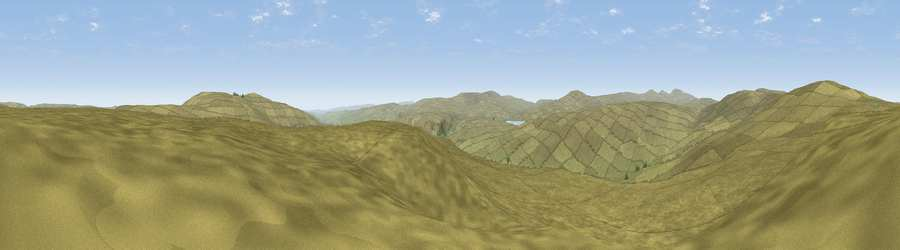

Viewpoint near Ireshopeburn
#11877 in England · top 36% of its area beats it · near IreshopeburnWhere it is
The exact computed spot (NY 83425 34225). Click the marker for map links.
The view, rendered

A 360° render of this exact spot computed from the terrain model, tree cover and land cover — summer colours, afternoon light, calibrated against photographs of famous viewpoints. Real trees, hedges and buildings will differ in detail.
The panorama
Grey silhouette: terrain skyline in each direction (720 bearings, Earth curvature and refraction included). Dashed green: skyline with trees (+15 m) and buildings (+8 m) as obstacles. Blue strip: how far the ground is visible on each bearing.
Where the view opens
Wedge length = distance to the farthest visible ground on that bearing (vegetation-aware). Rings at 10, 25 and 50 km.
What fills the view
100% grassland
Angular shares of the visible panorama (visual magnitude), not map area. Landscape diversity 0.01 (0–1 Shannon).
Key numbers
More beautiful places nearby
The staircase of upgrades: each row has a higher view potential than everything closer. Driving times are estimates from straight-line distance, calibrated against real road routing — check an actual route before setting out.
| Place | Direction | Drive | Score |
|---|---|---|---|
| Viewpoint near Wearhead | NNW · 2 km | ~5 min | 66.5 |
| Fendrith Hill | ESE · 4 km | ~10 min | 70.0 |
| Dead Stones | NW · 7 km | ~14 min | 72.8 |
| Viewpoint c10490_7651 | S · 10 km | ~19 min | 74.4 |
| Mickle Fell | SSW · 10 km | ~19 min | 75.8 |
| Great Dun Fell | W · 13 km | ~23 min | 77.8 |
| Little Dun Fell | W · 13 km | ~24 min | 78.4 |
| Cross Fell | W · 15 km | ~27 min | 78.7 |
54.70277, -2.25873 · source: screening · position refined by local search. Computed location — check access rights before visiting.